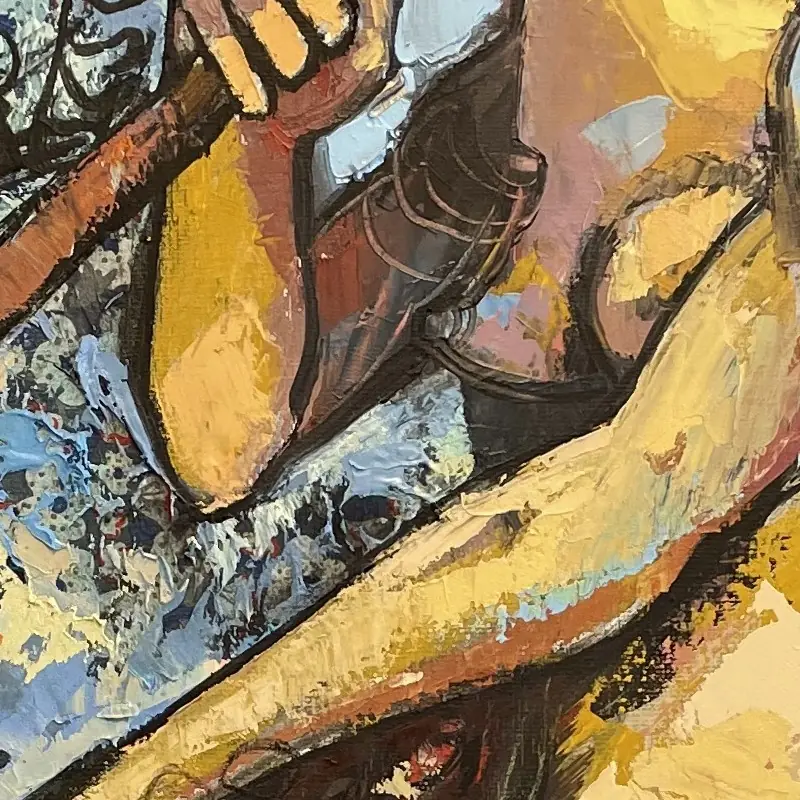

Angel III
- Year
- 2023
- Technique
- Mixed media on canvas
- Size (height × width)
- 100 × 80 cm
Angel III, 2023: a mixed-media work on canvas by the Cuban-Norwegian painter and sculptor Ramón Eduardo Haití Filiu.
Enquire about this workAngel III, 2023: a mixed-media work on canvas by the Cuban-Norwegian painter and sculptor Ramón Eduardo Haití Filiu.
Enquire about this workDetailAn 800-pixel crop from the original photograph, at full resolution.
